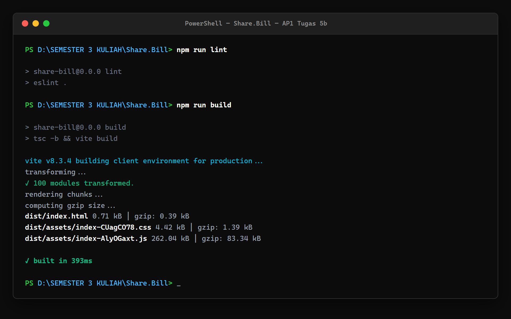

Pengembangan aplikasi berbasis web skala modern menuntut keseimbangan antara penambahan fungsionalitas dan pemeliharaan kinerja aplikasi yang cepat serta responsif. Pada tahapan sebelumnya, Kelompok QWERTY telah menyelesaikan implementasi PWA minimal (Tugas 5a) yang mencakup web app manifest, ikon adaptif, service worker untuk offline fallback, dan strategi cache aset, serta implementasi Component Library (Tugas 5b) yang merombak antarmuka menggunakan komponen reusable berstandar aksesibilitas (Button, Card, dan FormField).
Tujuan dari audit performa ini adalah untuk mengukur secara obyektif dampak teknis dari kedua implementasi tersebut terhadap metrik kunci kinerja web yang diakui secara global (Google Web Vitals), menganalisis perubahan ukuran berkas bundel (bundle size), memvalidasi kepatuhan aksesibilitas web (WAI-ARIA), serta mendokumentasikan hasil pengujian secara transparan berbasis berkas data hasil audit riil.
Pengujian dilakukan pada build produksi aplikasi menggunakan protokol pengujian otomatis Google Lighthouse CLI yang dijalankan di atas server lokal produksi:
npm run build (menjalankan tsc -b && vite build) — selesai dalam waktu 545 ms.npm run preview (server vite preview) pada URL target http://localhost:4173/.13.5.0 (didukung engine aksesibilitas axe-core 4.14.0).155.0.0.0 pada sistem operasi 64-bit Windows.2026-10-18T16:17:23.455Z) |
Post-Tugas 5: 19 Oktober 2026, 00:44 WIB (2026-10-18T17:44:27.250Z)
Pemeriksaan menyeluruh terhadap objek configSettings pada kedua berkas JSON membuktikan kesetaraan konfigurasi 100%. Sesuai aturan standar Lighthouse (clearStorageTypes: ["service_workers", "cache_storage", ...]), cache browser dibersihkan sebelum pengujian. Dengan demikian, audit mengukur kondisi kunjungan pertama (first-load) dan tidak mengukur secara langsung manfaat caching Service Worker pada kunjungan ulang atau mode offline. Indeks benchmark CPU mesin tercatat 1589 pada baseline dan 1471 pada pengujian terkini (selisih ~7,4% akibat fluktuasi beban sistem operasi lokal Windows).
Seluruh data berikut disarikan secara akurat dari berkas data asli scratch/baseline-lighthouse.json dan scratch/post-5b-lighthouse.json:
| Kategori Audit | Skor Baseline | Skor Terkini (Post-5b) | Selisih (Delta) | Status dan Evaluasi |
|---|---|---|---|---|
| Performance | 100 (raw: 1.0) | 99 (raw: 0.99) | -1 poin | Puncak (Zona Hijau) Kinerja tetap optimal |
| Accessibility | 94 (raw: 0.94) | 94 (raw: 0.94) | 0 (Tetap) | Sangat Baik Komponen baru menjaga standar a11y |
| Best Practices | 100 (raw: 1.0) | 100 (raw: 1.0) | 0 (Tetap) | Sempurna (100%) Tanpa isu atau peringatan konsol |
| SEO | 82 (raw: 0.82) | 91 (raw: 0.91) | +9 poin | Peningkatan Signifikan Metadata PWA berhasil lolos audit |
| Metrik Kunci | Nilai Baseline (Tampilan | Riil) | Nilai Terkini (Tampilan | Riil) | Selisih Riil | Standar Rekomendasi Google |
|---|---|---|---|---|
| First Contentful Paint (FCP) | 1,4 detik (1.374,1 ms) | 1,5 detik (1.453,2 ms) | +79,1 ms | Baik (Good) Ambang batas ≤ 1,8 detik |
| Largest Contentful Paint (LCP) | 1,4 detik (1.374,1 ms) | 1,6 detik (1.603,2 ms) | +229,1 ms | Baik (Good) Ambang batas ≤ 2,5 detik |
| Total Blocking Time (TBT) | 10 ms (7,0 ms) | 50 ms (54,5 ms) | +47,5 ms (riil) | Baik (Good) Ambang batas ≤ 200 ms |
| Cumulative Layout Shift (CLS) | 0 (0,000) | 0 (0,000) | 0,000 | Sempurna Nol pergeseran tata letak dinamis |
| Speed Index (SI) | 1,4 detik (1.374,1 ms) | 1,5 detik (1.453,2 ms) | +79,1 ms | Baik (Good) Ambang batas ≤ 3,4 detik |
| Time to Interactive (TTI) | 1,4 detik (1.409,3 ms) | 1,8 detik (1.760,6 ms) | +351,3 ms | Baik (Good) Ambang batas ≤ 3,8 detik |
Pengukuran dipisahkan secara tegas antara ukuran berkas fisik hasil kompilasi dan ukuran transfer protokol jaringan HTTP:
| Berkas Aset | Raw Baseline | Raw Terkini | Selisih Raw | Ukuran Gzip Terkini (Metode Pengukuran) |
|---|---|---|---|---|
JavaScript (dist/assets/*.js) |
259,46 kB | 262,04 kB | +2,59 kB | 82,49 kB (kompresi mandiri zlib) 83,34 kB (pelaporan build Vite) |
CSS (dist/assets/*.css) |
1,65 kB | 4,42 kB | +2,77 kB | 1,38 kB (kompresi mandiri zlib) 1,39 kB (pelaporan build Vite) |
HTML (dist/index.html) |
0,46 kB | 0,72 kB | +0,26 kB | 0,39 kB (kompresi mandiri zlib & Vite) |
| Total Bundel JS + CSS | 261,11 kB | 266,46 kB | +5,35 kB (+2,05%) | 83,88 kB (kompresi mandiri zlib) 84,73 kB (pelaporan build Vite) |
| Permintaan Sumber Daya | Transfer Baseline | Transfer Terkini | Selisih Transfer HTTP | Keterangan Kompresi & Header Respons |
|---|---|---|---|---|
| Root Document (HTML) | 710 B | 966 B | +256 B | Body HTML mentah (460 B → 716 B) + Header HTTP (~250 B). Server preview lokal tidak meng-gzip dokumen HTML. |
Bundel JavaScript (*.js) |
81.959 B (81,96 kB) | 82.921 B (82,92 kB) | +962 B (+0,96 kB) | Payload JS terkompresi gzip + Header respons HTTP. |
Stylesheet CSS (*.css) |
1.072 B (1,07 kB) | 1.747 B (1,75 kB) | +675 B (+0,68 kB) | Payload CSS terkompresi gzip + Header respons HTTP. |
| Total Wire Transfer JS + CSS | 83.031 B (83,03 kB) | 84.668 B (84,67 kB) | +1.637 B (+1,64 kB) | Kenaikan transfer wire bersih protokol HTTP sebesar +1,97%. |
Berikut adalah bukti tangkapan layar terminal autentik saat proses kompilasi bundel produksi (npm run build) dijalankan pada mesin pengembang lokal, menampilkan output ukuran berkas fisik yang sesuai dengan tabel perbandingan:

Kenaikan skor SEO dibuktikan secara nyata oleh audit Lighthouse pada audit meta-description. Pada baseline awal, aplikasi belum memiliki tag deskripsi sehingga mendapat skor 0 (gagal). Pada implementasi Tugas 5a PWA, penambahan <meta name="description" content="Share.Bill - Split bills based on what everyone ordered." /> ke dalam berkas index.html menyebabkan audit ini berstatus lulus sempurna (skor 1). Skor belum mencapai 100 karena audit robots-txt bernilai 0 (server SPA Vite preview mengembalikan dokumen fallback index.html saat Lighthouse meminta /robots.txt).
Dalam mengevaluasi perubahan skor Performance dari 100 ke 99 serta pergeseran TBT dari 7,0 ms (tampilan 10 ms) ke 54,5 ms (tampilan 50 ms), penting untuk membedakan antara fakta hasil pengamatan audit dengan hipotesis teknis penyebabnya:
scriptEvaluation (+105,8 ms, dari 90,4 ms ke 196,2 ms) dan styleLayout (+21,1 ms, dari 140,1 ms ke 161,2 ms).sw.js selama audit navigasi karena seluruh storage dan service worker dibersihkan sebelum pengujian oleh setelan clearStorageTypes.scriptEvaluation dan styleLayout menjadi indikasi yang ditemukan pada audit mengenai potensi beban komputasi tambahan. Namun, temuan ini tidak dapat dinyatakan sebagai bukti mutlak bahwa komponen Button, Card, atau CSS merupakan penyebab tunggal, mengingat adanya interaksi dinamis modul lain serta perbedaan lingkungan eksekusi.
Skor CLS tercatat 0,000 tanpa pergeseran. Hal ini membuktikan bahwa komponen Card dan FormField yang dibangun pada Tugas 5b memiliki struktur CSS yang solid dan tidak menimbulkan lonjakan visual dinamis saat elemen antarmuka selesai dimuat pada skenario pengujian ini.
Skor Accessibility secara keseluruhan berada pada angka 94 (skala 100), stabil sama persis dengan kondisi baseline awal. Berdasarkan laporan audit otomatis Lighthouse (axe-core) pada halaman Beranda, skor Accessibility tertahan di 94 bukan karena isu struktur semantik baru, melainkan karena masih adanya temuan rasio kontras warna (color-contrast, skor 0) sebesar 3.76:1 pada teks tombol utama hijau emerald #059669 terhadap putih dan tautan navigasi aktif .nav-link.active, di mana standar WCAG AA merekomendasikan rasio minimal 4.5:1 untuk teks berukuran normal (14px).
| Tahapan Implementasi | Dampak yang Teramati | Beban Sumber Daya (Overhead) | Catatan Evaluasi Lingkup Uji |
|---|---|---|---|
| PWA (Tugas 5a) | PWA installable, kelengkapan metadata web app, SEO meningkat +9 poin. | Penambahan metadata manifest.json dan HTML (+256 B). |
Pengujian first-load memvalidasi metadata & manifest, namun belum mengukur langsung performa caching repeat-visit atau offline fallback. |
| Component Library (Tugas 5b) | Standarisasi antarmuka, aksesibilitas terstruktur, konsistensi form. | Bundel JS+CSS bertambah +5,35 kB raw (+1,64 kB transfer HTTP); TBT 50 ms. | Pertambahan ukuran terkendali pada skenario pengujian yang dilakukan. |
public/robots.txt sederhana dengan instruksi User-agent: * Allow: / agar server preview tidak mengembalikan dokumen HTML fallback.#047857 (Deep Emerald) yang memiliki rasio kontras > 4.5:1 terhadap latar putih untuk memenuhi seluruh kriteria WCAG AA.Berdasarkan audit performa komparatif antara kondisi baseline awal dan kondisi terkini setelah pengerjaan Tugas 5a (PWA) dan Tugas 5b (Reusable Components) pada proyek Share.Bill oleh Kelompok QWERTY, dapat disimpulkan bahwa:
Dengan demikian, data pengujian yang diperoleh menunjukkan bahwa implementasi Tugas 5a dan Tugas 5b dapat diintegrasikan dengan penambahan beban sumber daya yang terkelola dengan baik dalam batasan pengujian yang telah dilakukan.